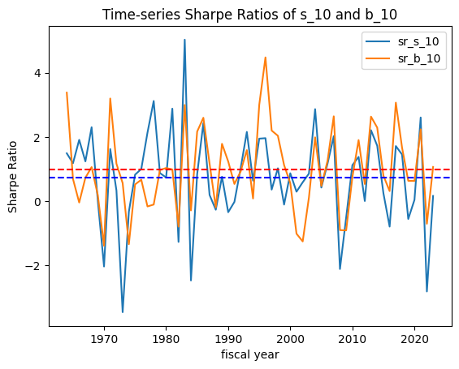
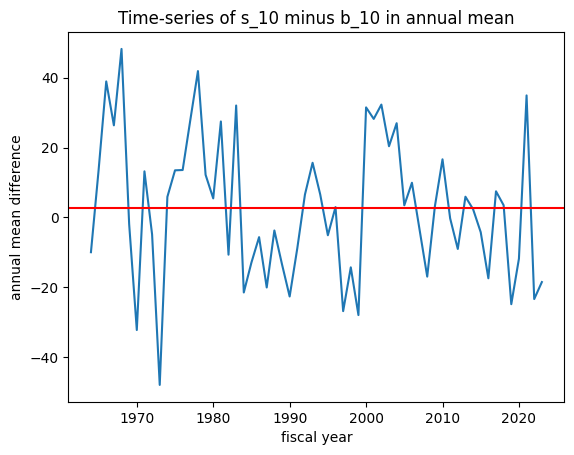
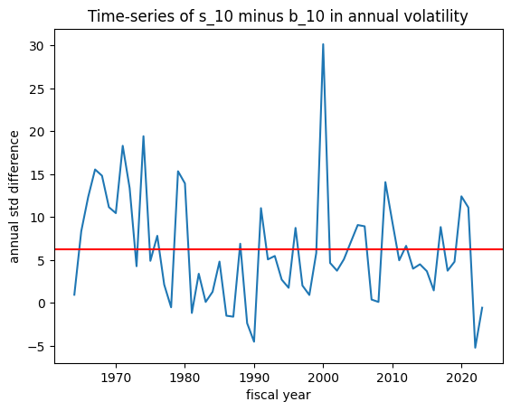
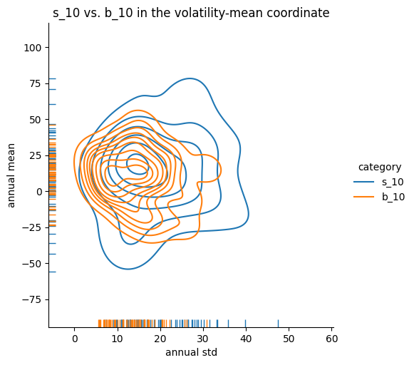

This chapter presents the structure and results of the TBTF strategy using a sequence of modular analyses.
Overview
This study investigates the structural properties and empirical performance of a “Too Big To Fail” (TBTF) portfolio strategy, defined as a portfolio composed of the largest market capitalization stocks in the U.S. equity market. Using monthly stock-level data from the CRSP universe (NYSE, Nasdaq, AMEX), we examine whether top-ranked stocks—selected purely by market capitalization—consistently outperform others in terms of risk-adjusted returns.
Our empirical design centers around the hypothesis that structural asymmetries in capital allocation, exacerbated by post-2008 monetary policies and market concentration, result in persistent distortions in return distributions. The TBTF strategy, though simple in construction, appears to capture these structural features with surprising consistency.
We treat the year 2010 as a potential structural break, dividing the full sample into two equal-length periods:
- Pre-2010: January 1996 to December 2009
- Post-2010: January 2010 to December 2023
This periodization allows us to analyze both long-term stability and post-crisis distortions in the equity return distribution.
Main Hypotheses
Return Superiority: The return distributions of top market-cap stocks are structurally superior to those of mid- and small-cap stocks in terms of risk-adjusted performance (e.g., Sharpe, Sortino, Omega ratios).
Persistence and Absorption: Stocks that reach the top decile of market capitalization exhibit high persistence and low turnover, potentially distorting market competitiveness and reducing allocative efficiency.
Convex Capital Concentration: The cross-sectional distribution of capital shares among top-ranked stocks is increasingly convex, suggesting long-term structural lock-in effects analogous to wealth inequality (e.g., Lorenz curve analogy).
Data Source and Construction
This section describes the data used to construct and evaluate the TBTF portfolio strategy. We utilize multiple sources to enable a comprehensive analysis of market structure, return distributions, and benchmark comparisons. The primary dataset is drawn from CRSP, with supplemental reference portfolios and index returns from Fama-French and Yahoo Finance, respectively.
1. Primary Data: CRSP Monthly Stock File
We use the Center for Research in Security Prices (CRSP) monthly stock files, covering the period from January 1996 to December 2023. The CRSP universe includes all listed common stocks on the NYSE, Nasdaq, and AMEX exchanges. The following variables are extracted:
- PERMNO: Unique stock identifier
- Date: Monthly observation date
- Market Capitalization: Calculated using shares outstanding × price
- Return (RET): Monthly total return including dividends
- Delisting Return (DLRET): Final return for stocks removed from CRSP
- SIC Code: Used for optional industry classification
We restrict the sample to ordinary common shares (share codes 10 and 11) to exclude ADRs, REITs, and other non-standard securities.
Bias Adjustment Strategy
To ensure robustness against common data biases, we employ the following correction methods:
Survivorship Bias: We retain all stocks, including those delisted during the sample period, to avoid overestimating returns from survivor-only data.
Delisting Bias: The total return for delisted stocks is calculated as:
\[
R_{\text{net}} = (1 + \text{RET}) \cdot (1 + \text{DLRET}) - 1
\]
If RET is missing but DLRET is available, we use DLRET as the return for the final month.
State-Based Exit Classification:
For the purpose of transition matrix modeling in Section 4, we define an 11th state representing “exit”:
- Stocks that are delisted move into this absorbing state.
- IPOs are considered to enter from this external state and are assigned to decile groups starting from their first month of listing.
2. Secondary Data Sources
Fama-French Research Portfolios
From the Ken French Data Library, we collect the following datasets:
- ME10 Decile Portfolios: Used to compare return characteristics between small-cap (
s_10) and large-cap (b_10) portfolios.
- ME × PRIOR Portfolios: Cross-sorted on size (ME) and prior 12-month return momentum. We focus on:
ME5 PRIOR4: Large size, high momentumME4 PRIOR3: Mid size, moderate momentum
These portfolios are value-weighted, rebalanced annually using NYSE breakpoints, and provided as monthly returns.
Index and ETF Benchmarks
To compare TBTF performance with market-traded investment vehicles, we incorporate the following index and ETF data:
- Pre-2010 Indices (from Yahoo Finance):
- DJIA (Dow Jones Industrial Average)
- NDX (Nasdaq 100 Index)
- Post-2010 ETFs:
- DIA: SPDR Dow Jones Industrial Average ETF (inception: 1998)
- QQQ: Invesco Nasdaq-100 ETF (inception: 1999)
- SPY: SPDR S&P 500 ETF (inception: 1993)
- VTI: Vanguard Total Stock Market ETF (inception: 2001)
The inclusion of these instruments enables direct comparison with passive investment strategies commonly available to retail and institutional investors.
Size-Momentum Benchmark: Size-Sorted Portfolios
To establish a structural benchmark for the TBTF strategy, we begin by examining the historical performance of size-sorted portfolios constructed by Fama and French. In particular, we compare the top and bottom deciles of market capitalization—commonly denoted as b_10 (large-cap) and s_10 (small-cap)—using monthly return data spanning from July 1963 to June 2023.
The data originate from the “Portfolios Formed on Size (ME)” dataset provided by the Ken French Data Library. These portfolios, covering NYSE, Nasdaq, and AMEX stocks, are rebalanced annually using NYSE breakpoints and report monthly value-weighted excess returns—i.e., returns net of the one-month Treasury bill rate (risk-free return).
For additional robustness, we construct aggregates (e.g., s_70, s_90) to represent broader small-cap behavior.
Motivation
This section evaluates whether large-cap portfolios exhibit systematically superior risk-adjusted performance relative to small-cap portfolios. Such a result would support the hypothesis that TBTF-style strategies derive their advantage not from tactical optimization, but from structural features of the cross-sectional return distribution.
Methodology
We compare the s_10 and b_10 portfolios in three dimensions:
- Distributional Shape: via QQ-plots and skewness asymmetry
- Volatility Profile: through standard deviation comparisons
- Sharpe Ratio Dynamics: using time-varying rolling Sharpe ratio curves and volatility–mean coordinate plots
Unlike most academic studies that summarize portfolio performance using static points in mean–volatility space, we propose a dynamic framework in which Sharpe ratios are evaluated as time-series objects. This allows us to capture persistent structural asymmetries.
Key Findings
- The
b_10 portfolio exhibits consistently lower volatility than s_10, across the full 60-year period.
- Dynamic Sharpe ratio visualization reveals that the performance advantage of
b_10 is persistent over time, not a byproduct of a particular decade or business cycle.
- QQ-plots show that
b_10 excess returns are closer to Gaussian, while s_10 returns display tail asymmetry—characterized by positive skewness and negative tail risk.
These results suggest that large-cap portfolios, especially those at the very top of the capitalization spectrum, provide more stable and efficient excess return profiles. This supports the structural validity of selecting top-ranked assets by market capitalization in TBTF portfolio construction.
Sharpe Ratio Dynamics
While static comparisons of mean and volatility offer useful summary insights, they can be misleading in the presence of temporal instability. To capture the time-varying performance profile of small- and large-cap portfolios, we construct rolling Sharpe ratios using annualized excess returns.
Let \(\mu_t\) and \(\sigma_t\) denote the rolling annualized excess return mean and volatility of a portfolio over a 36-month window. Then, the rolling Sharpe ratio at time \(t\) is computed as:
\[
\text{Sharpe}_t = \frac{\mu_t}{\sigma_t}
\]
We focus on the bottom and top size deciles: s_10 (small-cap) and b_10 (large-cap).
Key Results
- Over the 60-year period, the unconditional average annual Sharpe ratio of
b_10 was 0.99, compared to 0.74 for s_10.
- The time-series of rolling Sharpe ratios reveals that
b_10 dominates structurally, not just in isolated windows.
- During periods of macroeconomic stress,
s_10 portfolios experience sharper volatility spikes, reducing their Sharpe ratios significantly.

Time-series of 36-month rolling Sharpe ratios for s_10 and b_10. Dashed lines represent the unconditional average for each.
To further visualize the structural difference, we compare the time-series difference in annualized excess returns and standard deviations:

Annual excess return difference: s_10 – b_10. The red horizontal line marks the long-run average (~3.0% annually).

Annual volatility difference: s_10 – b_10. Large-cap volatility is consistently lower.
We also construct a bivariate distribution of annual mean and standard deviation using kernel density estimates:

Kernel density estimate of annual excess return vs. annual volatility for s_10 and b_10. The separation in volatility–mean space reflects the underlying Sharpe ratio asymmetry.
These dynamic plots provide a richer understanding of the persistent performance asymmetry between the smallest and largest decile portfolios—supporting the broader structural thesis underlying TBTF.
Contribution
- Introduces a time-dynamic framework—Sharpe ratio level curves—to visualize and quantify structural performance asymmetries between size portfolios.
- Establishes a long-term empirical benchmark against which TBTF performance can be evaluated.
- Provides theoretical and empirical justification for focusing on top-market-cap stocks, beyond simple momentum or value signals.
Appendix
Summary of Analytical Components in the TBTF Strategy
| Large vs. Small Stocks |
Compare return distributions and volatility structures |
| Top 10 Stocks |
Analyze list stability and industry composition (high-tech dominance) |
| Transition Analysis |
Estimate transition probabilities and stationary distributions |
| Risk-Adjusted Performance |
Compare Sharpe, Sortino, Omega ratios against benchmarks (ETFs, indices) |
Appendix
Data Availability and Frequency
| CRSP Monthly Stock File |
Monthly |
1996–2023 |
WRDS/CRSP |
| Fama-French ME Decile |
Monthly |
1963–2023 |
Ken French Data Library |
| Fama-French ME × PRIOR |
Monthly |
1963–2023 |
Ken French Data Library |
| DJIA, NDX (Price Indices) |
Monthly |
1996–2023 |
Yahoo Finance |
| DIA, QQQ, SPY, VTI (ETFs) |
Monthly |
1999–2023 (varies) |
Yahoo Finance |
Appendix
Table A1: Summary Statistics (1963–2023)
Annualized Summary Statistics for Fama-French Size-Decile Portfolios
Monthly value-weighted excess returns for size-sorted portfolios from July 1963 to June 2023. Excess returns are defined as raw portfolio returns net of the one-month Treasury bill rate.
|
Statistic
|
s_10
|
b_10
|
s_20
|
b_20
|
s_30
|
b_30
|
s_70
|
s_80
|
s_90
|
|
Count
|
360
|
360
|
360
|
360
|
360
|
360
|
360
|
360
|
360
|
|
Mean
|
0.96
|
0.91
|
1.00
|
0.92
|
1.01
|
0.92
|
1.00
|
0.99
|
0.99
|
|
Std. Dev
|
6.32
|
4.38
|
6.46
|
4.38
|
6.31
|
4.40
|
5.81
|
5.67
|
5.54
|
|
Min
|
-22.21
|
-14.78
|
-23.06
|
-15.91
|
-23.56
|
-16.29
|
-22.58
|
-21.69
|
-21.23
|
|
25%
|
-2.54
|
-1.62
|
-2.73
|
-1.64
|
-2.89
|
-1.67
|
-2.35
|
-2.40
|
-2.35
|
|
Median
|
1.25
|
1.35
|
1.36
|
1.32
|
1.29
|
1.32
|
1.35
|
1.40
|
1.33
|
|
75%
|
4.64
|
3.51
|
5.20
|
3.65
|
4.88
|
3.73
|
4.71
|
4.66
|
4.58
|
|
Max
|
29.50
|
13.10
|
27.54
|
13.25
|
24.01
|
13.34
|
19.42
|
18.64
|
18.26
|